In this notebook we will build a geometric model of a photograph as a projection from three-dimensional projective space to the image plane,
\[
\mathbb P^3 \dashrightarrow \mathbb P^2 .
\]
A real camera forms an image through a much richer physical process. Light passes through a system of lenses, reaches a sensor, and is eventually converted into an array of pixel values. We will leave all of this aside for now and concentrate on the geometry of image formation alone.
That geometry is much older than photography. Its roots reach back to ancient optics, and during the Renaissance the same ideas became the basis of linear perspective: a systematic way of representing a three-dimensional scene on a two-dimensional surface. Leon Battista Alberti described an image as an intersegazione della piramide visiva — a cross-section of the visual pyramid.
We will take that construction as our starting point: choose a centre of projection, join it to the points of the scene, and intersect the resulting visual rays with an image plane.
From there we will gradually build the pinhole camera model. Homogeneous coordinates will let us encode the entire projection in a single \(3\times4\) matrix,
\[
\mathbf x \sim \mathsf P\,\mathbf X ,
\]
defined up to an arbitrary non-zero scale and therefore carrying eleven degrees of freedom.
Before looking at the camera matrix, however, let us look at the geometry.
The visual pyramid
Let us start with the collection of 3D points \(\{\mathbf{X}_i\}\) that represents the Origami House, and add a centre of projection\(\mathbf{C}\): Alberti’s eye, or the optical centre of our ideal camera.
Join \(\mathbf C\) to every point of the scene. The resulting family of concurrent lines is the visual pyramid. To form an image, place a plane \(\phi\) across these rays.
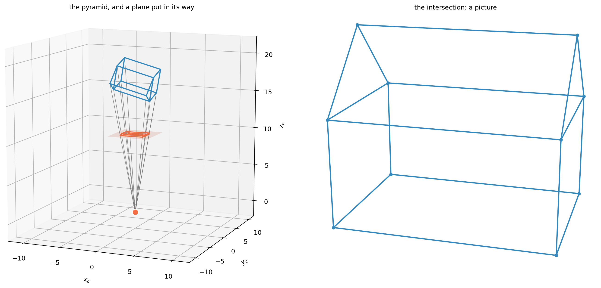
Figure 1: The visual pyramid. Left: rays from the centre of projection through the vertices of the Origami House intersect an image plane. Right: the resulting intersection points form the image.
Each ray meets the plane in one image point \[
\mathbf x_i = \overline{\mathbf C\mathbf X_i}\cap\phi .
\]
Point by point, the three-dimensional scene is cut by the image plane into a two-dimensional picture: Alberti’s intersegazione della piramide visiva.
From the visual pyramid to coordinates
To describe the construction algebraically, attach a coordinate frame to the camera. Place its origin at the centre of projection \(\mathbf C\) and choose the \(z_c\)-axis perpendicular to the image plane. The line through \(\mathbf C\) in this direction is called the optical axis. The \(x_c\)- and \(y_c\)-axes run parallel to the image plane.
If the image plane is at distance \(f\) from the centre, its equation is simply
\[
z_c=f.
\]
Consider a scene point $ X_c=(X_c,Y_c,Z_c)^. $
The visual ray through \(\mathbf X_c\) intersects the image plane at \(\mathbf x=(x,y,f)^\top\).
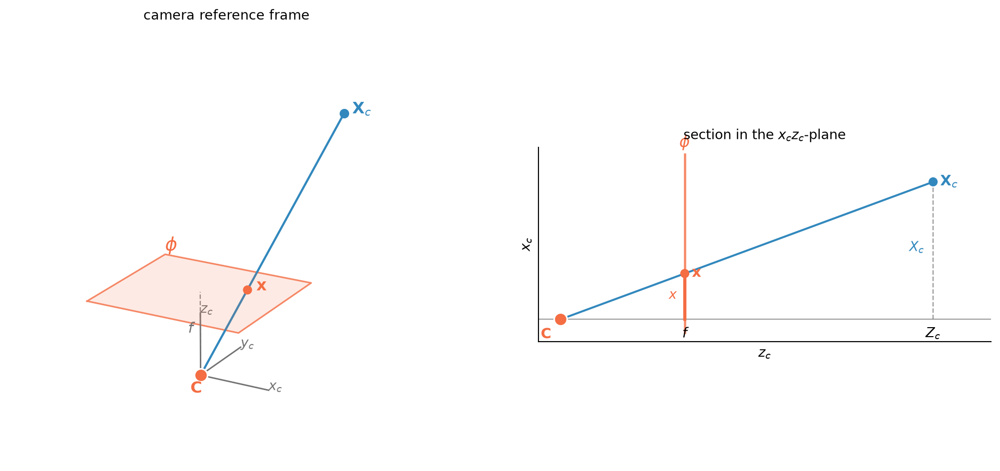
Figure 2: Perspective projection in the camera reference frame. Left: a scene point and its visual ray intersect the image plane \(z_c=f\). Right: in an \(x_cz_c\) section, the projection equation follows from similar triangles.
In the \(x_cz_c\)- and \(y_cz_c\)-sections, the visual ray gives two pairs of similar triangles. Hence
The division by \(Z_c\) is responsible for one of the most familiar effects of perspective.
Take two identical Origami Houses and place them side by side, then move one farther away along the viewing direction. Their metric size is unchanged, but the second house has greater depth \(Z_c\). Since perspective projection divides by depth, it occupies a smaller region of the image plane.
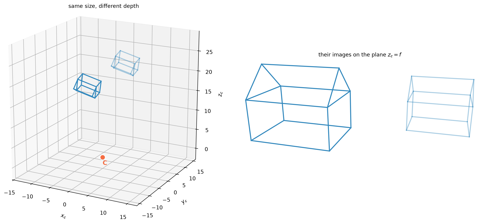
Figure 3: Two identical Origami Houses at different depths. Left: in camera coordinates, where the two copies have exactly the same size. Right: their projections onto the plane \(z_c=f\), where the copy at greater depth appears smaller.
The same factor \(1/Z_c\) that explains the change in apparent size also makes perspective projection nonlinear in Cartesian coordinates.
Homogeneous coordinates let us represent the same geometry with a linear map.
Homogeneous coordinates make projection linear
The perspective equations are nonlinear in Cartesian coordinates because they divide by depth. Homogeneous coordinates let us postpone that division.
So far, a point in the camera frame has been described by its Cartesian coordinates \((X_c,Y_c,Z_c)\). We now add one extra coordinate and write
where \(\sim\) denotes equality up to a non-zero scale.
The division by depth has not disappeared. In homogeneous coordinates the mapping is linear; the division appears only when we return to Cartesian image coordinates by normalising the last coordinate to one.
# Focal length and the corresponding camera matrix.f =1.4P_f = np.array([ [f, 0.0, 0.0, 0.0], [0.0, f, 0.0, 0.0], [0.0, 0.0, 1.0, 0.0],])# Add one homogeneous coordinate to every 3D point.Xh = np.vstack((Xc, np.ones((1, Xc.shape[1]))))# Linear projection: each column is now a homogeneous image point.xh = P_f @ Xh# Dehomogenize each column by dividing by its last coordinate.xy = xh[:2, :] / xh[2:3, :]# Look at the resulting image.fig, ax = plt.subplots(figsize=(5.5, 4.5))wireframe_2d(ax, xy, None)ax.set_xlabel("$x$")ax.set_ylabel("$y$")ax.set_title(r"projection by $\mathsf{P}_f$", fontsize=10)plt.show()
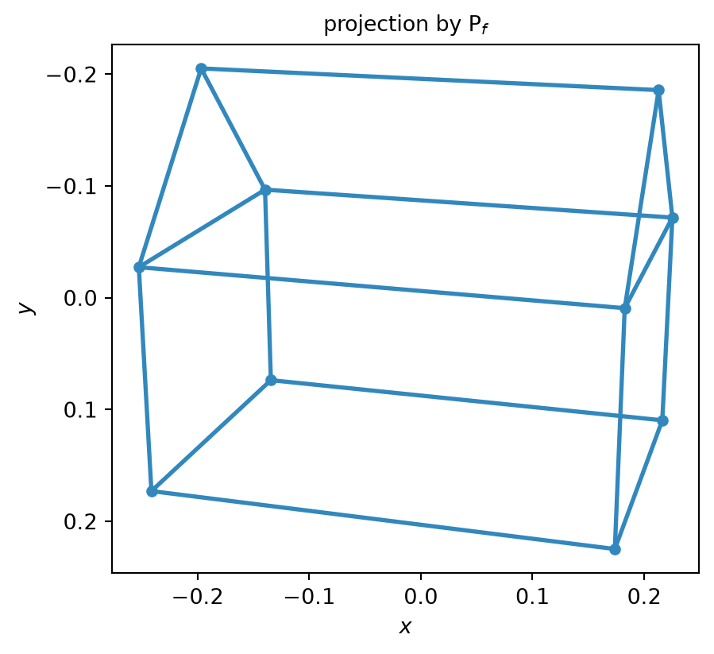
We can collect the same operation in a small function that will be used throughout the notebook.
def project_points(X, P):"""Project 3D points stored as columns through a 3 x 4 camera matrix."""# Add one homogeneous coordinate to every 3D point: 3 x N -> 4 x N. Xh = np.vstack((X, np.ones((1, X.shape[1]))))# Apply the projective camera: each column is a homogeneous image point. xh = P @ Xh# Dehomogenize each column by dividing by its last coordinate.return xh[:2, :] / xh[2:3, :]
A historical note. Homogeneous coordinates did not appear all at once in their modern form. In 1827 Ferdinand Möbius introduced homogeneous barycentric coordinates in his Der barycentrische Calcul; Feuerbach arrived at a related construction independently at about the same time. Julius Plücker subsequently developed and systematized homogeneous coordinate methods for projective geometry, notably for lines.
The notation has changed, but the underlying idea is already there: a point is represented by a tuple of numbers defined only up to a common non-zero scale.
The dashed arrow is deliberate: the camera is not defined at every point of \(\mathbb P^3\).
Indeed, a rank-three \(3\times4\) camera matrix has a one-dimensional right null space. Let \(\mathbf C\) be its non-zero generator,
\[
\mathsf P\mathbf C=\mathbf 0.
\]
But the zero vector does not represent a point of projective space, so \(\mathbf C\) has no image in \(\mathbb P^2\). This exceptional point is precisely the camera centre.
Every point other than \(\mathbf C\) determines an image point.
Note that the centre is also independent of the arbitrary scale used to represent the camera matrix. If \(\alpha\neq0\), then
\[
\ker(\alpha\mathsf P)=\ker(\mathsf P).
\]
Thus \(\mathsf P\) and \(\alpha\mathsf P\) represent the same projective camera and have the same camera centre.
# The camera centre is the right null vector of P_f._, _, Vt = np.linalg.svd(P_f)C_f = Vt[-1, :].reshape(4, 1)# Choose the representative whose last homogeneous coordinate is one.C_f = C_f / C_f[-1, 0]print("camera centre:")print(C_f)print("\nP_f @ C:")print(P_f @ C_f)
So far we have used the camera itself as our reference frame. The centre of projection was the origin, the \(z_c\)-axis was the optical axis, and the image plane was simply \(z_c=f\).
This is convenient for understanding projection, but a scene is usually described in its own world reference frame. For the Origami House, for example, we can attach a frame to the house, with \(z_w\) pointing vertically.
We now have two coordinate systems for the same geometry: a world frame attached to the scene and a camera frame attached to the camera.
To project a world point \(\mathbf X_w\), we first express it in the camera reference frame.
Let \(\mathbf C\) be the camera centre in world coordinates. The vector
\[
\mathbf X_w-\mathbf C
\]
points from the camera centre to the scene point, but its components are still measured along the world axes.
Let \(\mathbf r_1^\top\), \(\mathbf r_2^\top\), and \(\mathbf r_3^\top\) be the three axes of the camera frame, expressed in world coordinates. The coordinates of the vector in the camera frame are its projections onto these axes:
The pair \((\mathsf R,\mathbf t)\) gives the extrinsic parameters of the camera. The rotation describes the orientation of the camera axes, while \(\mathbf t=-\mathsf R\mathbf C\) is the world origin expressed in camera coordinates.
For our synthetic example we choose the camera centre and orient the camera towards the Origami House. The following small helper constructs such an orientation explicitly from the camera axes.
def look_at(centre, target, up=np.array([[0.0], [0.0], [1.0]])):"""World-to-camera rotation for a camera looking towards `target`."""# Camera z-axis: viewing direction, expressed in world coordinates. z_axis = target - centre z_axis = z_axis / np.linalg.norm(z_axis)# Camera x-axis: orthogonal to the viewing direction and to the reference up. x_axis = np.cross(z_axis[:, 0], up[:, 0])[:, None] x_axis = x_axis / np.linalg.norm(x_axis)# Complete a right-handed orthonormal camera frame. y_axis = np.cross(z_axis[:, 0], x_axis[:, 0])[:, None]# The camera axes are the rows of the world-to-camera rotation.return np.vstack((x_axis.T, y_axis.T, z_axis.T))
We can now choose a concrete camera pose for the synthetic scene. We specify its centre \(\mathbf C\) in world coordinates, orient it towards the Origami House, and obtain \(\mathbf t\) from \(\mathbf t=-\mathsf R\mathbf C\).
# Camera centre in world coordinates.C = np.array([ [ 7.0], [-14.0], [ 7.0],])# Orient the camera towards the centre of the Origami House.target = X.mean(axis=1, keepdims=True)R = look_at(C, target)# Translation of the world origin in camera coordinates.t =-R @ C# Express the complete house in the camera frame.Xc = R @ X + tprint("camera centre C:")print(np.round(C, 3))print("\ntranslation t:")print(np.round(t, 3))
camera centre C:
[[ 7.]
[-14.]
[ 7.]]
translation t:
[[-2.889]
[ 2.072]
[16.774]]
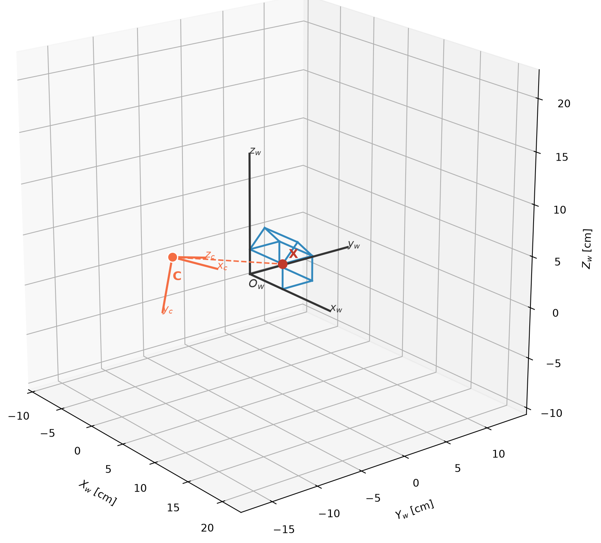
Figure 4: The world frame is attached to the Origami House, while the camera frame is centred at \(\mathbf C\). The same scene point can be described in either reference frame.
# Pick one vertex of the house. It is stored as a 3 x 1 column vector.key = IDS[len(IDS) //2]Xw = X[:, [index[key]]]# Vector from the camera centre to the point, still expressed in world axes.v = Xw - C# The rows of R are the camera axes expressed in world coordinates.x_axis = R[0:1, :]y_axis = R[1:2, :]z_axis = R[2:3, :]# Camera coordinates are the three components of v along those axes.Xc_direct = R @ vXc_from_axes = np.vstack(( x_axis @ v, y_axis @ v, z_axis @ v,))print("camera coordinates:")print(np.round(Xc_direct, 3))print("\nfrom the three axis projections:")print(np.round(Xc_from_axes, 3))
camera coordinates:
[[ 1.919]
[ 0.098]
[14.716]]
from the three axis projections:
[[ 1.919]
[ 0.098]
[14.716]]
def rigid_transform(R, t):"""Homogeneous matrix of the rigid transformation X' = R X + t.""" T = np.eye(4) T[:3, :3] = R T[:3, 3:4] = treturn T# Assemble the world-to-camera rigid transformation.T_wc = rigid_transform(R, t)# Apply it to the same point in homogeneous coordinates.Xw_h = np.vstack((Xw, [[1.0]]))Xc_h = T_wc @ Xw_hprint("from R (X_w - C):")print(np.round(Xc_direct, 3))print("\nfrom the homogeneous rigid transformation:")print(np.round(Xc_h[:3], 3))
from R (X_w - C):
[[ 1.919]
[ 0.098]
[14.716]]
from the homogeneous rigid transformation:
[[ 1.919]
[ 0.098]
[14.716]]
Thus the same perspective camera that acted on camera coordinates can act directly on world coordinates through the composed \(3\times4\) matrix
\[
\mathsf P=\mathsf P_f\mathsf T_{wc}.
\]
# Compose the perspective camera with the world-to-camera transformation.P = P_f @ T_wc# Project the Origami House directly from world coordinates.xy = project_points(X, P)
The camera centre can now be recovered using the characterization introduced earlier. In homogeneous world coordinates, let
The centre belongs to the right null space of \(\mathsf P\). The left \(3\times3\) factor in the expression above is invertible, so this is equivalent to
The projective null-space characterization and the Euclidean extrinsic parameters therefore identify the same camera centre.
# Recover the camera centre from the extrinsic parameters.C_from_extrinsics =-R.T @ t# In homogeneous coordinates it must lie in the null space of [R | t].C_h = np.vstack((C_from_extrinsics, [[1.0]]))Rt = np.hstack((R, t))print("camera centre recovered from R and t:")print(np.round(C_from_extrinsics, 6))print("\n[R | t] C_h:")print(np.round(Rt @ C_h, 12))
camera centre recovered from R and t:
[[ 7.]
[-14.]
[ 7.]]
[R | t] C_h:
[[ 0.]
[ 0.]
[-0.]]
Rotating the camera
Keep the camera centre \(\mathbf C\) fixed and change only its orientation. If \(\mathsf Q\) is a rotation expressed in the camera frame, the new world-to-camera rotation is
\[
\mathsf R'=\mathsf Q\mathsf R.
\]
Since the centre has not moved, the corresponding translation is still determined by
\[
\mathbf t'=-\mathsf R'\mathbf C.
\]
# Define Q as a rotation of angle theta around the y axistheta = np.deg2rad(15.0)Q = np.array([ [ np.cos(theta), 0.0, np.sin(theta)], [ 0.0, 1.0, 0.0], [-np.sin(theta), 0.0, np.cos(theta)],])R_rot = Q @ Rt_rot =-R_rot @ CP_rot = P_f @ rigid_transform(R_rot, t_rot)xy_rot = project_points(X, P_rot)
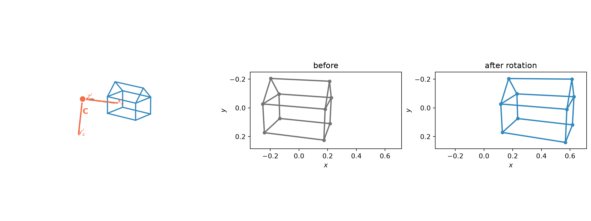
Figure 5: Rotating the camera about its centre. The camera centre remains fixed, while its orientation changes from \(\mathsf R\) to \(\mathsf R'\). The two right panels show the corresponding perspective projections of the same fixed Origami House.
Translating the camera
Now keep the camera orientation fixed and move its centre from \(\mathbf C\) to \(\mathbf C'\).
Since the camera axes do not change,
\[
\mathsf R'=\mathsf R.
\]
The new centre \(\mathbf C'\) determines the corresponding translation,
\[
\mathbf t'=-\mathsf R\mathbf C'.
\]
# Move the camera centre in the world frame.C_tr = C + np.array([ [-3.0], [ 0.0], [ 1.0],])# Keep the camera orientation fixed.R_tr = Rt_tr =-R_tr @ C_tr# Assemble the translated camera and project the same Origami House.P_tr = P_f @ rigid_transform(R_tr, t_tr)xy_tr = project_points(X, P_tr)
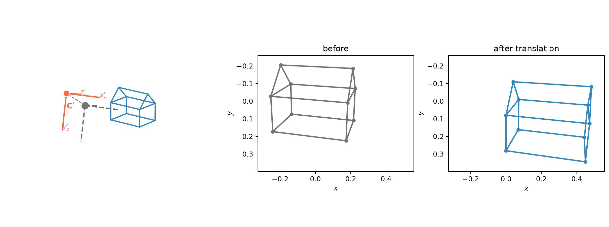
Figure 6: Translating the camera while keeping its orientation fixed. The camera axes remain parallel, while the centre moves from \(\mathbf C\) to \(\mathbf C'\). The two right panels show the corresponding perspective projections of the same fixed Origami House.
Rotation changes the orientation of the camera frame. Translation changes its origin. Together they determine the camera pose with respect to the world.
From the image plane to pixels
So far we have described projection using continuous coordinates on the image plane. A digital image instead uses pixel coordinates: a column coordinate \(u\) and a row coordinate \(v\), usually measured from the upper-left corner.
It is useful to separate the geometry of perspective projection from this choice of image coordinates. Dividing the camera coordinates by depth gives the normalised image coordinates
Geometrically, these are the intersections of the visual rays with the reference plane \(z_c=1\).
To convert these coordinates to pixels, we must account for the physical scale of the sensor and for the choice of pixel coordinate system. If a pixel has width \(p_x\) and height \(p_y\), the focal length expressed in pixels is
The quantities \(f_x\) and \(f_y\) are the focal length expressed in pixels along the two image axes. The point \((c_x,c_y)\) is the principal point, where the optical axis intersects the image plane, expressed in pixel coordinates. The parameter \(s\) describes a possible skew between the two image axes; for most modern cameras it is taken to be zero.
These quantities are the intrinsic parameters of the camera. They describe the transformation from the normalised image plane to the coordinate system of the digital image.
The effect of the focal length and the principal point can be seen directly in the image.
Combining the change from world to camera coordinates with the intrinsic transformation gives
\[
\lambda\mathbf x
=
\mathsf K
[\mathsf R\mid\mathbf t]
\mathbf X_w.
\]
def intrinsic_matrix(fx, fy=None, cx=0.0, cy=0.0, skew=0.0):"""Build the 3 x 3 intrinsic calibration matrix."""if fy isNone: fy = fxreturn np.array([ [fx, skew, cx], [0.0, fy, cy], [0.0, 0.0, 1.0], ])# A 960 x 720 digital image.W_PIX, H_PIX =960, 720# Square pixels, zero skew, principal point at the image centre.K = intrinsic_matrix( fx=850, cx=W_PIX /2, cy=H_PIX /2,)# Compose intrinsics and extrinsics into a single 3 x 4 camera matrix.P = K @ np.hstack((R, t))# Project the Origami House directly into pixel coordinates.uv = project_points(X, P)
Changing the focal length
Keep the camera pose, the image size, and the principal point fixed, and vary only the focal length. From
increasing \(f_x\) and \(f_y\) moves image points farther from the principal point. The projected object therefore appears larger. For a fixed image size, the field of view becomes narrower.
# Compare three cameras that differ only in focal length.focals = [500.0, 850.0, 1400.0]focal_projections = []for f_pix in focals: K_f = intrinsic_matrix( fx=f_pix, fy=f_pix, cx=W_PIX /2, cy=H_PIX /2, ) P_focal = K_f @ np.hstack((R, t)) focal_projections.append(project_points(X, P_focal))
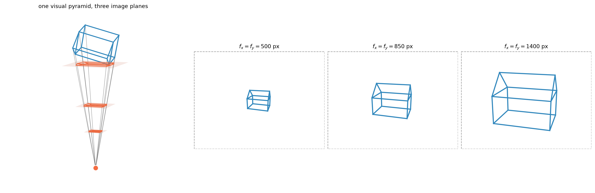
Figure 7: Changing the focal length while keeping the camera pose and image size fixed. Left: the same visual rays intersect image planes at three different distances from the camera centre. Right: increasing the focal length magnifies the projection and reduces the field of view.
Changing the principal point
Now keep the focal length and the camera pose fixed, and change only the principal point. From
\[
u=f_x x_n+c_x,
\qquad
v=f_y y_n+c_y,
\]
a change in \((c_x,c_y)\) adds the same offset to every projected point. The shape and scale of the projection are unchanged; only its position in pixel coordinates changes.
# Compare three cameras that differ only in principal point.principal_points = [ (W_PIX /2, H_PIX /2), (W_PIX /2-190, H_PIX /2-90), (W_PIX /2+150, H_PIX /2+110),]principal_point_projections = []for cx, cy in principal_points: K_c = intrinsic_matrix( fx=850, fy=850, cx=cx, cy=cy, ) P_c = K_c @ np.hstack((R, t)) principal_point_projections.append(project_points(X, P_c))
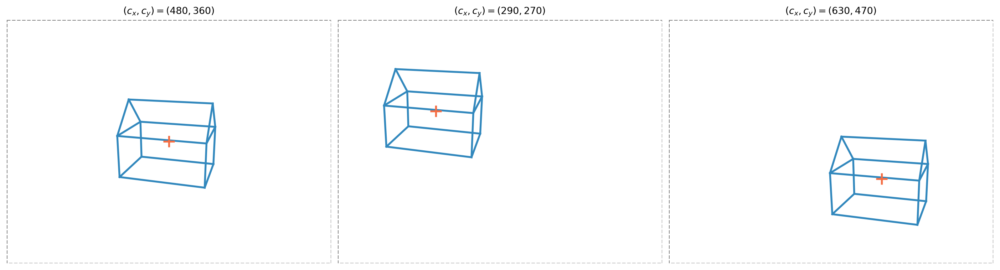
Figure 8: Changing the principal point while keeping the focal length and camera pose fixed. The cross marks \((c_x,c_y)\). Changing the principal point translates the projection in pixel coordinates without changing its shape or scale.
The principal point also has a nice interpretation in normalised image coordinates. The optical axis meets the normalised image plane at
Thus \((c_x,c_y)\) is precisely the pixel coordinate of the point where the optical axis meets the image plane.
Cropping an image changes the pixel coordinate system and therefore changes the numerical coordinates of the principal point, even though the underlying camera geometry has not changed.
The camera matrix
We can now combine the three steps of perspective projection.
The two factors have different roles. The intrinsic matrix \(\mathsf K\) describes the mapping from the normalised image plane to pixel coordinates, while \((\mathsf R,\mathbf t)\) describes the pose of the camera with respect to the world frame.
A general intrinsic matrix has five parameters, while a rigid camera pose has six. The resulting eleven parameters agree with the eleven degrees of freedom of a \(3\times4\) camera matrix defined up to a non-zero scale.
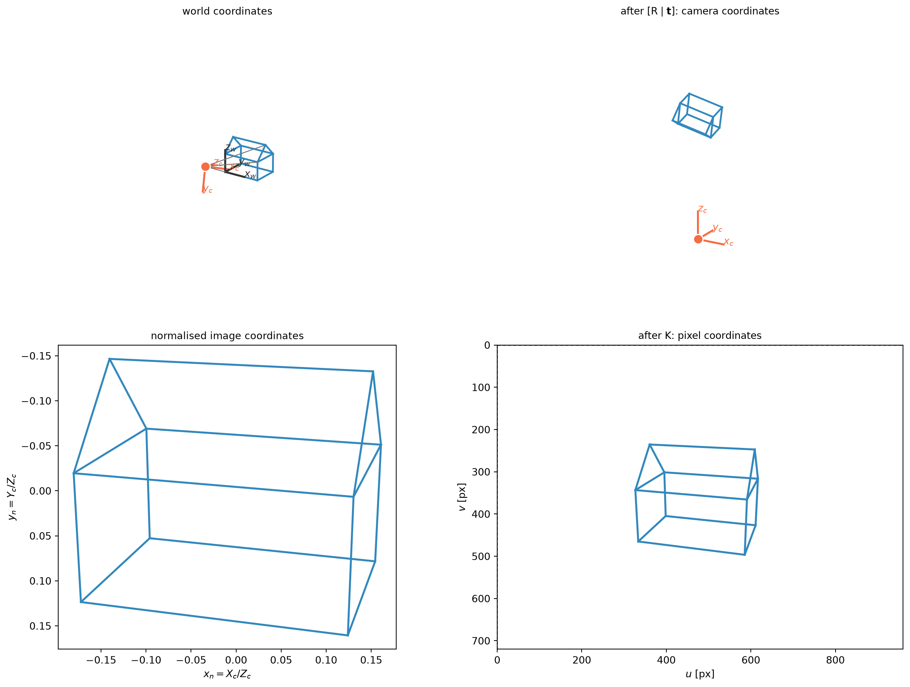
Figure 9: The stages of perspective projection. Top left: the Origami House and camera in world coordinates. Top right: the same geometry expressed in the camera frame. Bottom left: perspective division gives normalised image coordinates. Bottom right: the intrinsic matrix \(\mathsf K\) converts them to pixel coordinates.
Back-projecting a pixel
The chain of maps can also be followed in the opposite direction.
Forward projection maps a 3D point to a single image point,
This map loses depth. Consequently, going backwards from an image point does not recover a unique point of space: it recovers the line of 3D points that project to it.
Thus a pixel determines a direction, but not a depth. A single view does not determine the value of \(\mu\).
def backproject_rays(pixels, K, R, t):"""Back-project 2D pixels, stored as columns, to unit rays in the world."""# Homogeneous pixel coordinates, one pixel per column. x = np.vstack((pixels, np.ones((1, pixels.shape[1]))))# Remove the intrinsic transformation:# each column is now a ray direction in the camera frame. d_camera = np.linalg.solve(K, x)# Express the same directions in the world frame. d_world = R.T @ d_camera# Use unit directions, so the ray parameter measures Euclidean distance. d_world /= np.linalg.norm(d_world, axis=0, keepdims=True)# Camera centre in world coordinates. C =-R.T @ treturn C, d_world
# Pick three projected vertices of the Origami House.picked = [IDS[0], IDS[len(IDS) //2], IDS[-1]]picked_idx = [index[k] for k in picked]pixels = uv[:, picked_idx]# Back-project them into the world.origin, directions = backproject_rays(pixels, K, R, t)
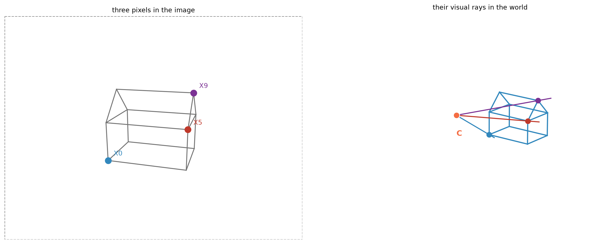
Figure 10: Back-projection of three image points. Left: three pixels in the digital image. Right: each pixel defines a visual ray through the camera centre. The original 3D vertices lie on these rays, but their position along the ray is not determined by a single image.
# Check that each original vertex lies on its back-projected ray.for j, key inenumerate(picked): d = directions[:, [j]] v = X[:, [index[key]]] - origin distance_to_ray = np.linalg.norm(v - d * (d.T @ v).item())print(f"{key}: distance from ray = {distance_to_ray:.2e} cm")
X0: distance from ray = 4.35e-15 cm
X5: distance from ray = 2.04e-15 cm
X9: distance from ray = 4.00e-15 cm
A calibrated image also determines angles between visual rays. For two pixels,
The camera pose does not appear: applying the same rotation to both rays does not change the angle between them.
# Ray directions obtained from two pixels using calibration alone.xh = np.vstack((pixels, np.ones((1, pixels.shape[1]))))d = np.linalg.solve(K, xh)d /= np.linalg.norm(d, axis=0, keepdims=True)cos_theta = (d[:, [0]].T @ d[:, [-1]]).item()theta = np.degrees(np.arccos(np.clip(cos_theta, -1.0, 1.0)))print(f"angle between the two rays: {theta:.2f} deg")
angle between the two rays: 23.35 deg
Back-projection from the camera matrix
If only the camera matrix \(\mathsf P\) is known, back-projection is still possible, but the result is naturally projective.
The camera centre is the right null space of \(\mathsf P\),
\[
\mathsf P\mathbf C=\mathbf 0.
\]
For an image point \(\mathbf x\), the pseudoinverse provides one 3D point
\[
\mathbf X_0=\mathsf P^+\mathbf x.
\]
Since a camera matrix has rank three,
\[
\mathsf P\mathsf P^+=\mathsf I,
\]
and therefore
\[
\mathsf P\mathbf X_0=\mathbf x.
\]
Adding any multiple of the camera centre does not change the image,
\[
\mathsf P(\mathbf X_0+\mu\mathbf C)
=
\mathbf x.
\]
Hence the back-projection of \(\mathbf x\) is the projective line
\[
\mathbf X
\sim
\alpha\,\mathsf P^+\mathbf x
+
\beta\,\mathbf C,
\qquad \alpha\neq0.
\]
Its projective closure contains the camera centre \(\mathbf C\), where the camera map itself is not defined.
The pseudoinverse is therefore not an inverse camera: it selects one point on the back-projected line, while the null space determines the remaining ambiguity.
Questions to leave open
Can changing the focal length compensate for moving the camera? Consider a subject at depth \(D\), whose image scale is proportional to \(f/D\). Move the camera along its optical axis so that the subject is now at depth \(D'\). How must \(f\) change to keep the subject at exactly the same size in the image? Now consider a second object at a different depth \(Z\). Will the same change of focal length keep its image unchanged as well? This is the geometry behind the dolly zoom.
What happens to points at infinity? A world direction \(\mathbf d\) can be represented by \(\mathbf X_\infty=(\mathbf d^\top,0)^\top\). Project it with \(\mathsf P=\mathsf K[\mathsf R\mid\mathbf t]\). Which camera parameters determine its image, and which disappear? What does this imply about the vanishing point of a family of parallel lines when the camera is translated without being rotated?
Further reading
Fusiello, A. Computer Vision: Three-dimensional Reconstruction Techniques, Springer Cham, 2024. The perspective camera, its intrinsic and extrinsic parameters, and back-projection.
Hartley, R. and Zisserman, A. Multiple View Geometry in Computer Vision, 2nd ed., Cambridge University Press, 2004. Chapter 6 for the projective camera and its decomposition.
Fusiello, A. Visione Computazionale: tecniche di ricostruzione tridimensionale, Franco Angeli, 2018, for the same material in Italian.
Alberti, L. B. De pictura / Della pittura, 1435–36, for the visual pyramid and the velo. Cecil Grayson’s is the standard critical edition.
Andersen, K. The Geometry of an Art, Springer, 2007, for the historical development of mathematical perspective.